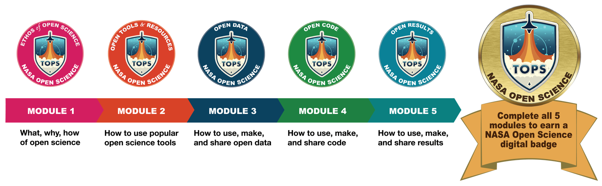

Transform to Open Science (TOPS) is a NASA initiative designed to rapidly transform agencies, organizations, and communities to an inclusive culture of open science. Developed by the TOPS initiative, the guidance provided by the Open Science 101 curriculum will promote the transformation of the research landscape and the accompanying advancement of scientific discovery. The Open Science 101 curriculum aims to introduce learners to a nuanced understanding of open science, enabling participants to better understand an open science workflow from end to end. The focus of the curriculum will be on providing learners with a basic understanding of open science, its ethos and benefits, and how to actively participate in open science communities. The TOPS curriculum will also be used to support researchers looking to engage with NASA as NASA moves to adopt more open science requirements. Scientists will need to acquire the new skills highlighted in the curriculum to participate in open science effectively and to demonstrate those skills when applying for NASA funding opportunities.

A NASA Open Science digital badge is earned by completing all five modules and passing the assessment at the end of each module.